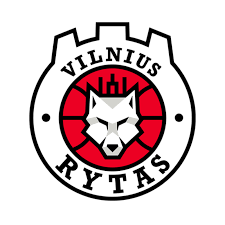

Rytas
Logotipas:

Įkurtas: 1963 m
Treneris: Giedrius Žibėnas
Komanda:
- Margiris Normantas
- Maurice Ndour
- Jarvis Williams
- Arnas Adomavičius
- Gytis Radzevičius
- Vaidas Kariniauskas
- Lukas Uleckas
- Mindaugas Girdžiūnas
- Tanner Leissner
- Ivan Buva
- Adas Šimonis
- Kenneth Smith
- Arnas Butkevičius
- Rokas Jocius
Oficiali svetainė
<Grįžti į pagrindinį puslapį